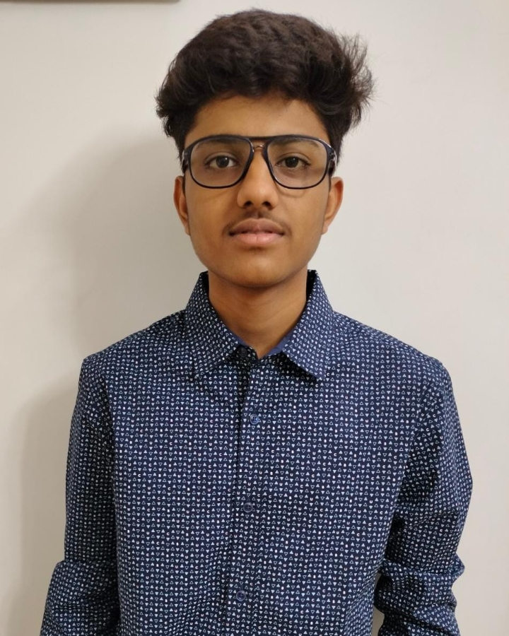

Dhanay Agarwal

Indian Institute of Technology
Mechanical Engineering
LinkedIn
Github
Summary
A dedicated and solutions-driven individual with a strong foundation in engineering principles and hands-on experience in innovative projects, seeking to apply technical skills to real-world challenges.
Education
- 10th, Global Indian International School, 94.8%
- 12th, Global Indian International School, 96.4%
- B.Tech (Mechanical), Indian Institute Of Technology Jammu, 8.4(CGPA)
Projects
- Monitoring Singapore Ocean Diversity to Classify Biological Sounds from Mechanical Sounds
Jan 2024 - Apr 2024
- Conducted manual STFT and preprocessed data for labeled acoustic recordings
- Applied machine learning libraries and neural networks to construct classifier model.
- Adopted Audacity, Python, and Jupyter Notebook for project tasks.
- Campus Security Management System
Sep 2024 - Nov 2024
- Developed a role-based security system using Python and MySQL.
- Managed visitor and student records with add, update, view, and delete functions.
- Implemented incident reporting and access point management linked to security guards.
Skills
- Programming: C/C++, Python, SQL
- Tools & OS: Jupyter Notebook, Audacity, Windows
- Libraries/Frameworks: Pandas, Numpy
Certifications
- Certification on completion of Workshop on FEA Applications conducted by Entuple Technologies at IIT Jammu
- Certificate of Academic Appreciation for being in top three positions of the class for Semester 22-01, 22-02, 23-01,
23-02, 24-01
- Completed an advanced Graph Theory Programming Camp organized by AlgoUniversity, mentored by Codeforces
Master.
Other Details